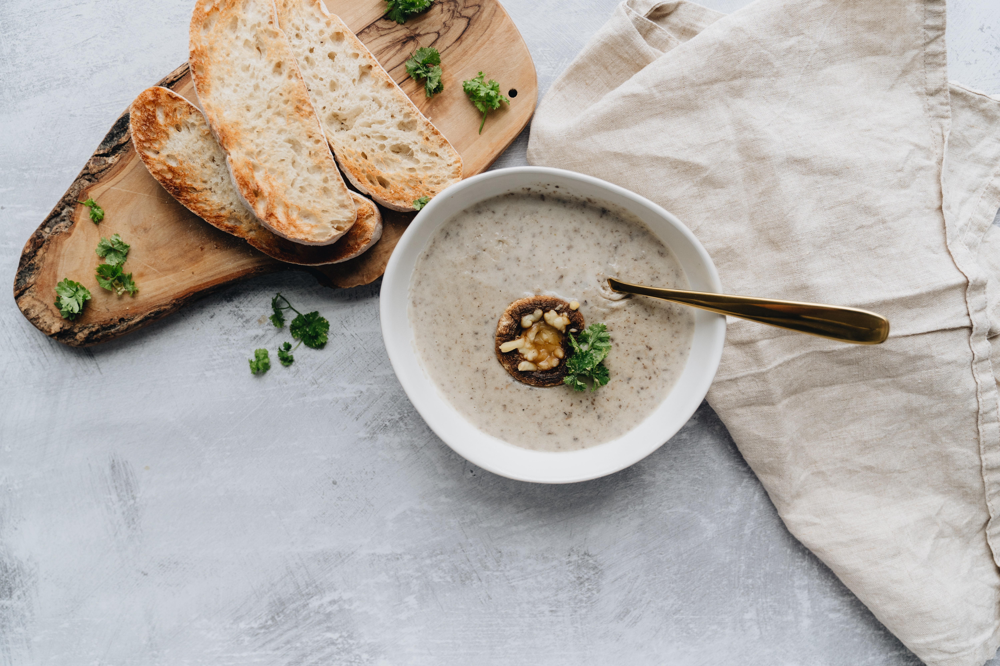

Creamy Mushroom Soup

This Creamy muchroom soup will be sure to be a winner in winter
What’s the one thing that makes this Mushroom Soup stand out from the rest? You’ll enjoy mushroom flavour in every mouthful. As strange and obvious as that sounds, most mushroom soups are actually nothing more than mushroom bits floating in a generically-flavoured creamy soup broth. But this one is 100% mushroom flavour – down to the last spoonful!
Swiss Brown / cremini mushrooms have a stronger mushroom flavour than regular white / button mushrooms but make the soup browner. So I like to use a combination of both Swiss Brown and standard white mushrooms. This gives you the best of both worlds: an intense mushroom flavour with an elegant pale cream colour rather than a (very) brown one!
Ingredients
- 30g / 2 tbsp unsalted butter
- 1 onion , chopped
- 2 garlic cloves , minced
- 400g / 14 oz white mushrooms
- 200g/ 7 oz Swiss Brown/Cremini mushroom
- 3 1/4 cups vegetable stock
- 1/4 tsp salt , cooking/kosher
- 1/8 tsp black pepper
- 3/4 cup crème fraiche or cream
Garnises/Serving
- Croutons
- Cream or extra virgin olive oil , for drizzling
- Parsley (roughly chopped), chervil (if you're feeling a bit fancy), or thyme leaves
- Bread for dunking
Instructions
- Cut mushrooms into 4 slices, then dice into 3 or 4 pieces.
- Melt butter in a large pot over medium high heat. Add onion and garlic. Cook for 3 minutes until softened, but not golden.
- Add mushrooms and cook for 10 minutes, stirring regularly. Do not try to brown; they won't as the pot is too crowded but we do not need colour.
- Simmer 15 min: Add vegetable stock, salt and pepper. Bring to a boil, then lower heat to medium and simmer gently for 15 minutes without a lid.
- Stir in cream (or crème fraiche), then simmer for another 5 minutes.
- Transfer to a blender (do in batches, if necessary). Remove the cap from the feeding hole in the blender lid, cover the hole with a folded tea towel. Blend until completely smooth.
- Return to pot, simmer for a minute or two until bubbles caused by blending largely subside and soup is hot.
- Ladle into bowls. Garnish with a drizzle of extra virgin olive oil or cream, croutons and parsley or (if you're feeling a bit fancy), chervil. Don't forget bread for dunking!